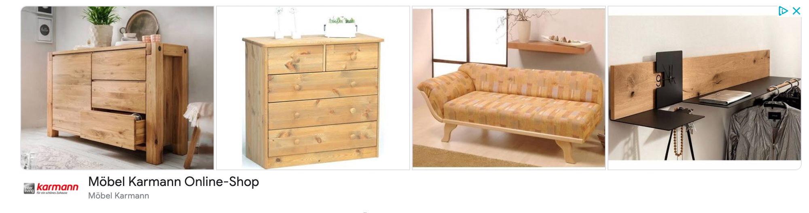

Neue Vorsichtsmaßnahme
Stiko rät bei Covid-Impfung jetzt zur „Aspiration“: Ärzte erklären, was das bedeutet

Getty Images/iStockphoto/ Sanja Radin
Die Stiko empfiehlt jetzt eine Aspiration bei der Impfung.
Donnerstag, 24.02.2022, 14:18
Die Stiko empfiehlt bei der Corona-Impfung jetzt die sogenannte Aspiration als Vorsichtsmaßnahme. FOCUS Online erklärt, was es damit auf sich hat – und was diese Neuerung für bereits Geimpfte bedeutet.
Jede Woche veröffentlicht die Ständige Impfkommission (Stiko) einen Bericht zu aktuellen Infektionskrankheiten. Seit mehr als zwei Jahren wird in diesem sogenannten „Epidemiologischen Bulletin“ auch alles Wissenswerte um das Coronavirus thematisiert. So wie in der vergangenen Woche. Dort veröffentlichte die Stiko nämlich eine „aktualisierte Impfempfehlung“ zu den Covid-Vakzinen. Der Großteil der Angaben liest sich ähnlich zu dem, was bereits in den vergangenen Monaten verkündet wurde. Doch wer genau liest, dem fällt eine neue Passage auf:
„Die Impfung ist strikt intramuskulär (in den Muskel) und keinesfalls intradermal (in die Haut), subkutan (unter die Haut) oder intravaskulär (in ein Gefäß) zu verabreichen. (…) Wenngleich akzidentielle (unbeabsichtigte) intravasale Injektionen bei einer intramuskulären Impfstoffapplikation nur selten auftreten, ist bei Covid-19-Impfungen eine Aspiration bei intramuskulärer Applikation zur weiteren Erhöhung der Impfstoffsicherheit sinnvoll.“
Was heißt Aspiration bei der Impfung?
Die Stiko hält ab sofort also die sogenannte „Aspiration“ bei der Corona-Impfung für „sinnvoll“. Dabei handelt es sich um eine eigentlich seit 2016 nicht mehr empfohlene Sicherheitsvorkehrung bei Impfungen. „Wenn bei einer Injektion die Nadel in den Körper eindringt, dann ist es grundsätzlich möglich, dass man ein Gefäß trifft“, beschreibt der Infektiologe und Facharzt für Innere Medizin Tomas Jelinek der „Welt“ das Prozedere. „Um das auszuschließen, zieht man den Spritzenkolben etwas an und schaut, ob Blut angesaugt wird. Wenn das der Fall ist, wechselt man die Spritze und startet einen neuen Versuch.“
Diese Vorsichtsmaßnahme war früher üblich, wird von der Stiko bei anderen Impfungen aber nicht mehr empfohlen. Ausschlaggebend dafür waren Hinweise für schmerz- und stressreduziertes Impfen, wenn man die Aspiration weglässt. „Die Stiko hat diese Hinweise aufgegriffen und 2016 erstmals Hinweise zur Schmerz- und Stressreduktion beim Impfen in ihren Empfehlungen mit aufgenommen“, schreiben die Experten auf der Website des RKI. Weiter heißt es: „Die Stiko weist darauf hin, dass eine Aspiration vor der Injektion nicht notwendig ist und bei intramuskulären Injektionen vermieden werden soll, um Schmerzen zu reduzieren.“
Warum rät die Stiko bei der Covid-Impfung zur Aspiration?
Warum empfehlen die Experten bei der Corona-Impfung dann auf einmal wieder den Gefäß-Check? Auf eine Anfrage von FOCUS Online bezüglich der Beweggründe liefert die Stiko dieselbe knappe Erklärung, die sich auch im Bericht findet: „Im Tiermodell kam es nach direkter intravenöser Injektion eines mRNA-Impfstoffs zum Auftreten von Perimyokarditis – also einer Herzmuskelentzündung.“
Infektiologe Jelinek erklärt, dass solche Herzmuskelentzündungen jedoch sehr selten auftreten würden und das vor allem bei jungen Männern. Außerdem hätten sie „nach derzeitigem Stand des Wissens eher etwas mit dem Testosteronspiegel zu tun“. Dass die Stiko ihre Empfehlung geändert hat, rühre also von den benannten Tiermodellen. Nachvollziehen kann Jelinek diese Entscheidung laut „Welt“ trotzdem „nicht wirklich“.
Das Risiko sei bei korrekter intramuskulärer Gabe „nahezu ausgeschlossen“. Die Stiko wolle sich aber offenbar in alle Richtungen absichern, ergänzt der Mediziner. Hinzu kommt: Die Tiermodelle stammen schon aus dem August 2021. Es handelt sich also um keine neuen Erkenntnisse.
Was bedeutet die Änderung für bereits Geimpfte?
Infektiologe Christoph Spinner sieht in der veränderten Stiko-Empfehlung ebenfalls eine zusätzliche Vorsichtsmaßnahme. Bereits heute komme es demnach aber nur sehr selten zu unbeabsichtigten Gefäßinjektionen bei Impfungen.
Sorgen, weil er ohne Gefäß-Check geimpft worden ist, müsse sich ihm zufolge niemand, erklärt der Oberarzt für Infektiologie des Klinikums rechts der Isar auf Nachfrage von FOCUS Online.
Die Empfehlung solle lediglich die Möglichkeit unbeabsichtigter Injektionen in Blutgefäße reduzieren, die im Tiermodell mit dem Risiko einer Herzmuskelentzündung assoziiert waren. „Diese Maßnahme dient also primär der Verbesserung der Sicherheit der Impfungen.“


Waren diese Infos wertvoll für Sie?
Sie können uns Danke sagen. Unterstützen Sie uns mit einem beliebigen Betrag, der zeigt, wie viel Ihnen unsere Arbeit wert ist.
0,50 €
0,10 €
1,00 €


Herzlichen Dank
Vielen Dank für Ihr Feedback
Artikel kommentieren
Netiquette |
AGB